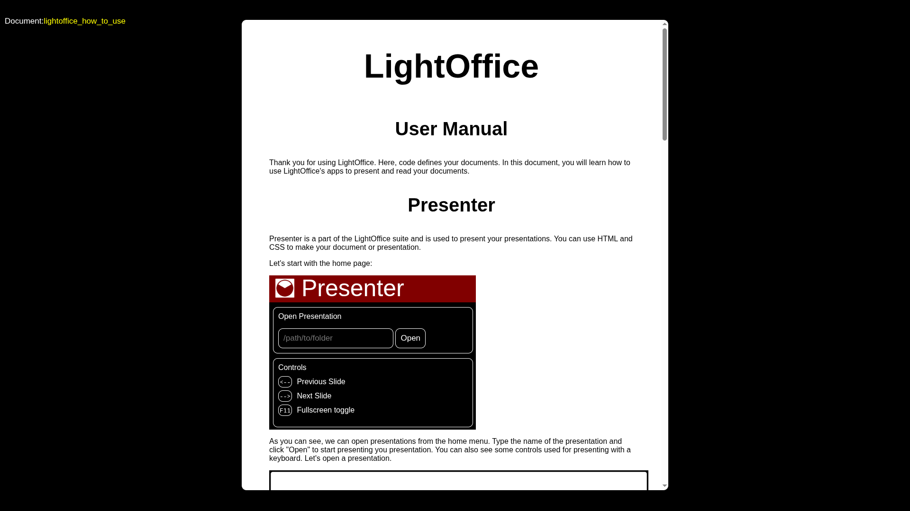

LightOffice
User Manual
Thank you for using LightOffice. Here, code defines your documents. In this document, you will learn how to use LightOffice's apps to present and read your documents.
Presenter
Presenter is a part of the LightOffice suite and is used to present your presentations. You can use HTML and CSS to make your document or presentation.
Let's start with the home page:

As you can see, we can open presentations from the home menu. Type the name of the presentation and click "Open" to start presenting you presentation. You can also see some controls used for presenting with a keyboard. Let's open a presentation.
As you can see, we have 4 buttons: Previous slide, next slide, fullscreen and notes. First and second buttons switch slides. The fullscreen button extends the presentation to the entire screen. The notes button reveals notes in a sepperate window.
Now, let's make our own presentation
First, create a folder in the presentations folder. You can name folder anything you want.
presenter/presentations/[Document name]
Use the following file structure for your document:
[Document Root]
images
style
style.css
notes.html
[Slide Number].html
Let's talk about CSS classes included in the default template.
CSS classes:
Slide types:
titleSlide
Components:
box
box-border
line
CSS IDs:
Font sizes:
top - 200px
sub - 100px
text - 30px
tiny - 20px
:root variables:
Colors:
background-color - for background
background-image - for background
color - for text
Body variables:
Fonts:
font-family - set a custom font
You should be good to go.
Docs
Docs is a part of the LightOffice suite and is used to read your documents. You can use HTML and CSS to make your document.
Let's start with the home page:
As you can see, we can open documents from the home menu. Type the name of the document and click "Open" to start reading your document. Let's open a document.
As you can see, we have the filename of the document, as well as the actual document.
Now, let's make our own document
First, create a folder in the docs folder. You can name folder anything you want.
docs/docs/[Document name]
Use the following file structure for your document:
[Document Root]
images
style
style.css
doc.html
Let's talk about CSS classes included in the default template.
CSS classes:
Components:
box
box-border
line
CSS IDs:
Font sizes:
top - 70px
sub - 40px
text - 30px
tiny - 20px
:root variables:
Colors:
background-color - for background
color - for text
Body variables:
Fonts:
font-family - set a custom font
Self-hosting
To host your instance of LightOffice, you will need a web server. Any web server should work fine. Load the files to the web server's site folder and start the server. Then go to the assigned IP and PORT. You should see the LightOffice aplication list. For testing, you can use VSCode's Live Server plugin.
Recomended system requirements
CPU
Any
RAM
100MB free
Storage
1MB
Browser
Any Chromium browser
LightOffice @ 2025